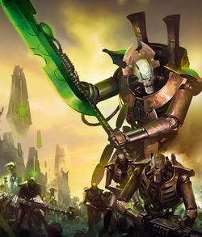
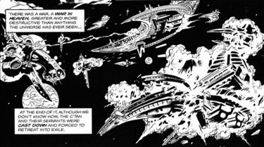
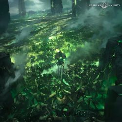
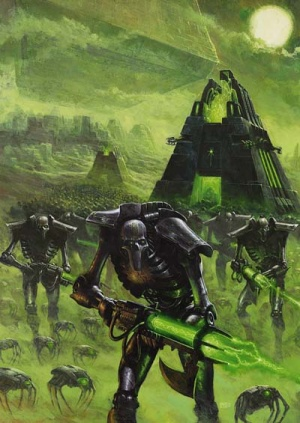

Origins
Beginnings
There are primitive artworks and tribal mythologies that speak of a xenos civilization that existed billions of years before humans originated on Terra. This ancient race was known as the Necrontyr. They lived precariously, facing solar winds and radiation storms that kept their lives constantly afflicted by sickness and loss.Their cities were built with their short life-spans in mind, as their ancestral tomb complexes greatly outnumbered the living, which were considered little more than temporal residents.Despite their wondrous technologies, the Necrontyr had not been able to conquer their hereditary biological weakness.They also desperately sought to conquer other planets with less hostile environments, and eventually their Dynasties held control over a great part of the galaxy.
It was during their military campaigns that the Necrontyr first came into contact with the Old Ones - one of the first sentient races.As their empire expanded and grew more diverse, tensions between the Dynasties threatened their unity.Rebellions known as the First Wars of Secession erupted as entire realms fought for independence. The Triarch - the ruling council of Necrontyr - realised that only the threat of an external enemy would bring unity once more and saw the Old Ones as the perfect subjects for the wrath of their race. Already jealous of the Old Ones' seemingly eternal life spans, the Necrontyr initiated hostilities - the separatists abandoned their rebellion, and the War in Heaven began.
The War in Heaven
The War in Heaven was one of the bloodiest wars in Galactic history, and it soon became apparent that the Necrontyr could never defeat the Old Ones and their mastery of the Warp despite their advanced technology.In a few short centuries, the Necrontyr were annihilated, left little more than an irritation, clinging to existence in the outer dark amongst the halo stars. The War in Heaven resulted in unspeakable loss of life over scores of generations: The unity of the Necrontyr began to fracture once more, resulting in the Second Wars of Secession.
The Triarch again desperately searched for for a unifying force, and the Necrontyr searched for bitter centuries for some power to unleash upon the Old Ones - and their prayers were answered.There are conflicting accounts of how the godlike C’tan were first discovered - some archive say a chance probe, others say they were detected in their study of stars, and the Book of Mournful Night says the C’tan were drawn to the Necrontyr by the beacon of their raw hatred for the Old Ones. Seeking the aid of these all-powerful star gods, the Necrontyr sought the favour of the C'tan and constructed bodies of living metal to contain their essence.
So it was that a C'tan known as the Deceiver had an audience with Szarekh the Silent King, lord of the Triarch. The C'tan offered the Silent King immortality and the power to lay low the old ones. They claimed this would be given freely, as from one ally to another, as they had also fought and been defeated by the Old Ones and were now looking for vengeance. The Triarch and their court internally discussed the offer for a year, during which the court astrologer, Orikan the Diviner, was the only voice against it. Szarekh was eventually won over by the honeyed words of the C'tan, dismissing Orikan's warnings in his eagerness to unify the Necrontyr and finally attain immortality.
The Biotransference
Beginning the great Biotransference, by order of Szarekh, every Necrontyr was to submit to the great biofurnaces where their weak flesh was replaced with immortal bodies of living metal. The C'tan drank off the torrent of cast-off life and energy and grew stronger as Szarekh, now in a machine body himself, realised he had made a terrible mistake. The Necrontyr may now be immortal and unified, but they had lost their souls in the process - Only few of the very strongest retained their intellect. Thus the soulless machines known as the Necrons were born.And so the second part of the War in Heaven began. Armed with weapons of god-like power, ships that could cross the galaxy in the blink of an eye, and utter supremacy in the material universe, the C'tan and Necrons fought as one.
The Old Ones were overwhelmed and defeated in a bloody slaughter of galactic scale that saw systems devoured by black holes and stars extinguished. With the assistance of Nyadra'zatha, the Necron managed to infiltrate the Webway and assail the Old Ones in their own realm. The Necrons burst into the Old Ones' strongest fortresses, overcoming their magics and technology. In desperation, the Old Ones seeded planets with life with ever-stronger links to the warp, to help fight the C'tan, including the Eldar, Orks, K'nib, Rashan, Jokaero and many others.
This worked, for a time - the energies of the warp were anathema to the C’tan - but before the Necron and C’tan could respond, the desperation of the Old Ones became their undoing. The Sea of Souls mirrored the war, pain, and destruction of the materium and awash with the spirits of those consumed in the carnage, older warp entities became terrifying predators.
Their intergalactic network shattered, their places of power overrun by horrors of their own devising, and their minions possessed by the Enslaver Plague, the Old Ones were scattered - their power utterly broken.
Throughout the final stages of the War in Heaven, Szarekh bided his time, waiting for the moment where the C'tan would be most vulnerable. With the Old Ones finally defeated, the Silent King struck and led a Necron revolt against the arrogant C'tan. The Necrons focused the unimaginable energies of the living universe into weapons too mighty for even the C'tan to endure. The C'tan, almost impossible to destroy entirely due to their very nature, were instead shattered into shards.
The Awakening
When the Tomb Worlds did begin to reawaken, it was not simultaneously. Some awoke to see the Great Crusade, others during the Age of Apostasy. Most, however, awoke during the later years of M41; but even still billions of Necrons lay dormant.[4d] What the Imperium cannot know is that, should the Necrons ever fully wake and unite, they would face a foe as numerous as themselves. For now, the Imperium has had but a taste of the Necrons’ might, and it is fortunate for Mankind that the Necrons remain divided by madness and conflicting agendas. However, these are but the first stumbling steps of a giant as it gathers pace, and even now powerful leaders like Anrakyr the Traveler, Imotekh the Stormlord and the Silent King are uniting their people under a common cause in order to resestablish the Infinite Empire.
Necrons battle the Ultramarines In 744.M41, the Silent King ended his self-imposed exile and returned to the galaxy after encounter with the Tyranids within the intergalactic void. He discovered the Tyranids were just one of many threats facing the Necrons. Other alien races had swarmed over their Tomb Worlds and the Warp now seeped across the Galaxy. He has begun a journey across the galaxy with a band of his loyal Triarch Praetorians to reawaken Tomb Worlds that still slumber so they may unite against the Tyranids. The returned Silent King is careful to not reveal his true identity, even to fellow Necrons. He works primarily through Triarch Praetorians or unwitting Crypteks and Necron Overlords to achieve his goal, and has steadily influenced the galaxy from one side to the other. Slowly, he has pursued his his great work from the shadows. He intends to unite the Necrons against the Tyranids while also manipulating the younger races to his own schemes.
The first reported contact between the Necrons and the Imperium of Man came in 897.M41 during the raid on Sanctuary 101. The report specifies that the invaders might have emerged from the ground itself.
After the formation of the Great Rift, the Necrons accelerated their plans against the Immaterium by creating the Pariah Nexus.
